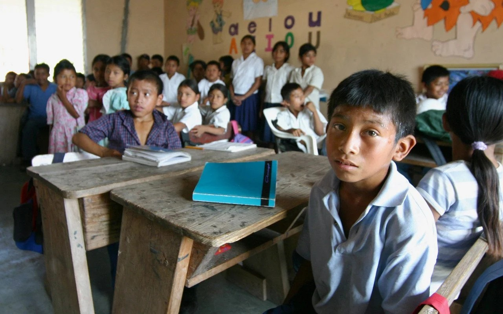

REZAGO EDUCATIVO EN MÉXICO: LA FALTA DE INFRAESTRUCTURA AFECTA A LA CALIDAD DE LA ENSEÑANZA
En México la falta de infraestructura afecta gravemente el aprendizaje en los estudiantes, debido a la deficiente enseñanza.
El rezago educativo en México es provocado por las condiciones en las que se encuentran las instituciones educativas. El problema se agrava conforme las comunidades donde se encuentran estas escuelas se alejan de los centros urbanos, muchas de las cuales no cuentan con servicios básicos. Como resultado, los estudiantes no reciben una buena calidad académica, lo que provoca en ellos poco interés por seguir aprendiendo y lleva a un aumento en la deserción escolar.
Según la institución QUADRATIN San Luis Potosí (2024), hasta el 40% de las escuelas de educación pública en México enfrentan condiciones precarias, con infraestructuras obsoletas y falta de servicios básicos como agua potable y energía eléctrica. Esto indica que las instituciones de educación pública no están cumpliendo con su deber de garantizar una educación de calidad a los estudiantes.
A raíz de esto, la agencia +Noticias (2024) resalta que la Secretaría de Educación Pública (SEP) ha promovido proyectos para disminuir el rezago educativo y mejorar la infraestructura de las escuelas, como los programas de Becas para el Bienestar Benito Juárez, La Escuela es Nuestra y Universidades para el Bienestar Benito Juárez García. Estos programas forman parte de los esfuerzos del gobierno para garantizar el acceso a la educación en el país. Sin embargo, a pesar de estos programas, persisten desafíos importantes en cuanto a la infraestructura escolar en México.
Es evidente que, aunque se han realizado avances significativos en el acceso a la educación en México, aún queda mucho trabajo por hacer para garantizar que todos los estudiantes tengan acceso a instalaciones escolares adecuadas que les permitan alcanzar su máximo potencial académico.
Ante esta situación, la institución QUADRATIN San Luis Potosí y Perteneces A.C. han estado trabajando en estrategias legales para abordar estas deficiencias, incluyendo el uso del juicio de amparo para garantizar que los derechos de los estudiantes a una educación de calidad sean respetados. Esta estrategia ha demostrado ser efectiva, logrando cambios significativos en un corto período de tiempo.
Referencias
Agencias de noticias RTV. (2024).Trabaja SEP para fortalecer infraestructura de 100% de escuelas de Educación Básica. Recuperado de: https://www.masnoticias.mx/trabaja-sep-para-fortalecer-infraestructura-de-100-de-escuelas-de-educacion-basica/
Quadratin. (2024). Educación en ruinas: 40% de escuelas viejas, sin agua, luz e internet. Recuperado de: https://sanluispotosi.quadratin.com.mx/nacional/educacion-en-ruinas-40-de-escuelas-viejas-sin-agua-luz-e-internet/
Forbes. (2017) México tiene 30 millones de personas en rezago educativo. Recueperado de: https://www.forbes.com.mx/mexico-30-millones-personas-rezago-educativo/